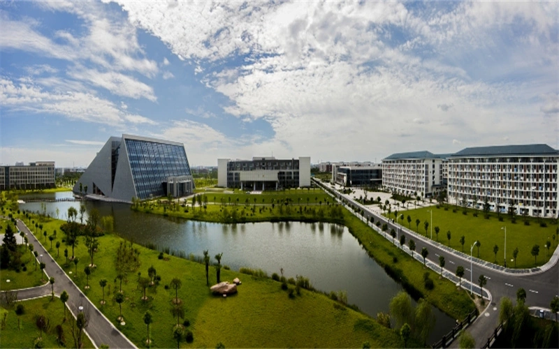
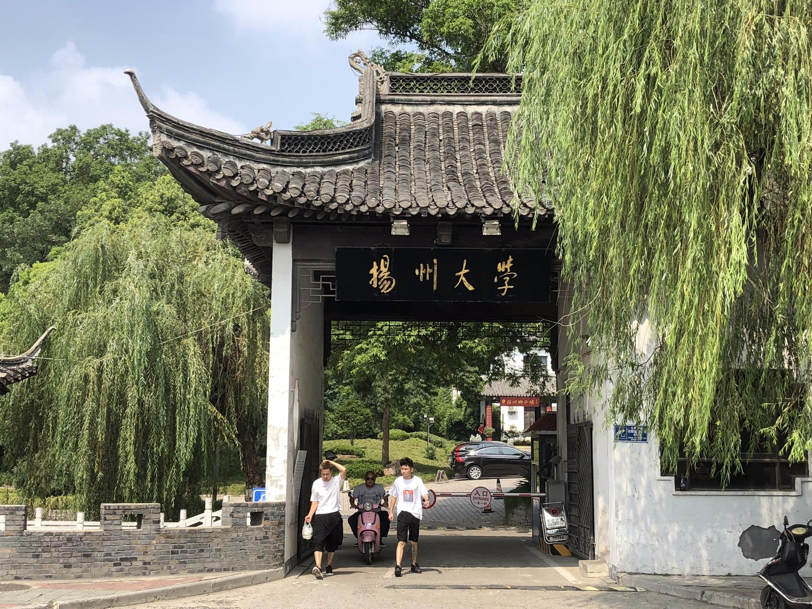
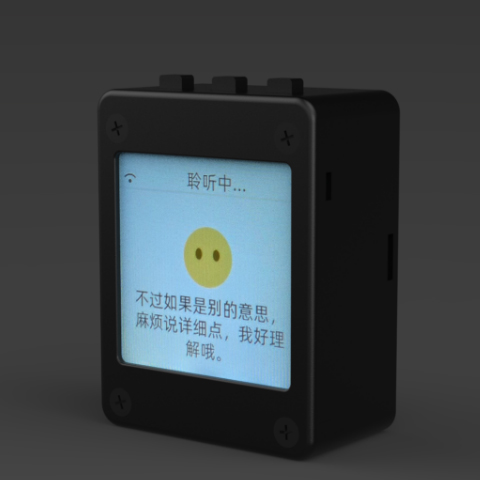
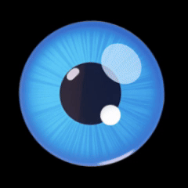
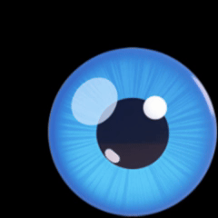
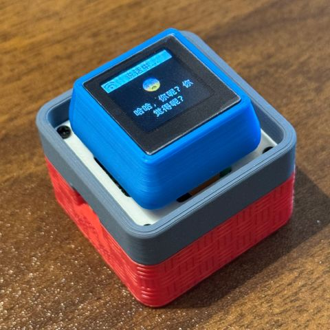

以扬州大学的历史沿革、校训精神和文化标识为内容起点，让用户可以通过自然语言了解母校故事。
YAVIS Concept
让校园文化，不只被收藏，也能被对话。
YAVIS 不是把“AI 感”堆在页面上，而是把智能语音、校园知识和实体陪伴自然地放进一个温暖的产品体验里。
把校区、地标、图书馆、食堂、学院与活动节点整理成可听、可问、可扩展的校园记忆。
对学生，它是学习路上的伙伴；对校友，它是一句“欢迎回到扬大”的温暖回应。
Campus Memory
从一张校园照片，到一句可以回答你的声音。
当用户说“小扬同学”，扬维斯会以校园伙伴的语气，把校史文化、校园生活和学习陪伴串联起来。
Scenes
三个典型场景，连接学生、校园与校友。
页面不再用强烈科技符号解释 AI，而是把能力放回校园真实场景里。
新生认识校园
介绍校区、图书馆、地标与常见校园问题，帮助新生更快建立归属感。

学生学习陪伴
背词、复习、番茄钟、备考建议，用更亲切的语气陪伴日常成长。

校友回到母校
不假装知道每个人的经历，而是唤起共同的校园记忆和母校情感。
Product Prototype
一个有实体触感的校园智能伙伴。
扬维斯基于小智 AI 语音硬件二次开发，结合自定义唤醒词、语音交互、屏幕表情与校园文化知识库。它的重点不是炫技，而是让校园文化有一个更容易靠近的载体。
唤醒词
“小扬同学”，形成亲切的校园身份。
语音交互
自然问答，讲述扬大校史与校园生活。
表情反馈
开心、思考、喜欢、休息等状态表达。
知识扩展
持续补充校史、地标、学院与校友故事。




Alumni Memory
欢迎回到扬大。
对校友来说，扬维斯不是一个问答机器，而是一份能被唤醒的母校记忆。
Knowledge Content
内容要可信，表达才有温度。
扬维斯的文化内容应尽量来自可靠资料。涉及政策、时间、费用、流程等可能变化的信息，应提醒用户以扬州大学最新官方渠道为准。
校史沿革
从百年文脉、办学节点到学校发展脉络，构建可追溯的校史内容。
文化标识
校训、校徽、校歌与精神文化，形成扬维斯的人格底色。
校园地标
校区、学院、图书馆、食堂、宿舍和活动节点，变成可讲述的校园地图。
成长陪伴
围绕学习、复习、备考与成长，用伙伴式语气给出小而可执行的建议。
Wake Word
小扬同学
一句亲切的唤醒词，让校园文化从资料中走出来，变成可以陪你聊天的伙伴。
YAVIS Reply
“你好，我是扬维斯。”
“我可以陪你了解扬大的校史、校园生活和学习成长，也陪校友留住一点关于母校的温暖记忆。”
Reference
这不是学校官方发布渠道，而是一个校园文化智能陪伴项目。
YAVIS 可以讲述、陪伴和传播扬州大学历史文化记忆，但不冒充学校官方部门发布通知、政策或承诺。
正式展示前建议补充图片授权、知识库来源清单与校园故事采集规范。